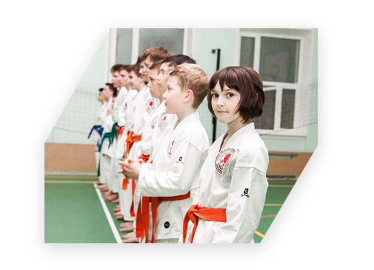

Карате для детей в Северном и Южном Бутово
- Наш опыт в тренерстве карате с 2005 г.
- 3 школы для занятий - Грина, 18 Б, Бартеневская, 17 и Чечерский, 56
- > 110 учеников в настоящее время
Наши основные цифры
Чему мы научим в спортивной секции в Бутово

Умение отстаивать собственные интересы, сказать решительное «нет», когда этого требует ситуация, способность постоять за себя – всему этому ребенка следует учить с ранних лет. Тогда он вырастает внутренне подготовленным к любой конфликтной ситуации, а в случае необходимости способен с достоинством выйти из нее.
Запишите своего ребенка в наш Клуб Дзаншин , и мы вооружим его необходимыми навыками общения в любой конфликтной ситуации. Мы научим его основным приемам самообороны, которые помогут ему постоять за себя. А регулярные тренировки сделают его организм крепким, волю железной, а характер непоколебимым.
Записаться в клуб

Настоящий мужчина – это образчик порядочности, честности, трудолюбия и галантных манер. Такой мужчина всегда открыт и не лукавит, а в случае необходимости умеет постоять за себя и своих близких. Он всегда протянет руку помощи слабому и никогда не станет унижаться. Одно «НО» - настоящими мужчинами не рождаются. Ими становятся, ежедневно закаляя свой характер и развивая собственный потенциал.
Хотите, чтоб ваш сын вырос настоящим мужчиной? Тогда запишите его на занятия в Клуб Дзаншин, где опытные и мудрые наставники проведут его по нелегкому пути формирования мужского характера. Где он день за днем будет становиться мудрее, сильнее, справедливее и вырастет настоящим мужчиной.
Записаться в клуб
Основа здоровья ребенка – это его физическая активность. Только регулярные занятия спортом запускают в организме ребенка необходимый клеточный метаболизм, обеспечивающий правильный обмен веществ и отвечающий за насыщение кислородом всех органов и систем. В противном случае, без достаточной физической активности, организм ребенка становится хилым, а сам он начинает болеть, отставая в развитии от своих сверстников.
Занятия в нашем карате Клубе Дзаншин сполна компенсируют потребность ребенка в физической активности. Его организм начнет формироваться естественным, заложенным самой природой путем.
Записаться в клуб

Компьютер, планшет, телефон и прочие гаджеты стали настоящими врагами наших детей. Проводя за ними дни напролет, ребенок не только лишает себя живого общения со сверстниками, культивируя собственные страхи и комплексы, но и гробит свое здоровье, в результате чего у него развивается сколиоз и снижается острота зрения.
Запишите
своего ребенка на занятия каратэ в наш Дзаншин Клуб, и мы увлечем его действительно полезным занятием. Регулярные спортивные тренировки не только разовьют его физически и укрепят здоровье, но и будут способствовать формированию твердого характера. Ребенок научится ставить перед собой цели и добиваться их.
Записаться в клуб

Все дети от рождения разные и если для кого-то овладение навыками общения не представляет особого труда, то для других, в силу застенчивости, это становится настоящей проблемой. Раскрыть потенциал ребенка, сделать его открытым, общительным можно только в условиях положительной и дружелюбной атмосферы.
Когда младшие видят в старших ребятах настоящих друзей, а старшие полностью доверяют своим наставникам. Так день за днем ребенок станет общительным и будет с легкостью идти на контакт. Запишите своего ребенка в наш Клуб Дзаншин, где он научится не только навыкам общения, но и сможет раскрыть весь свой потенциал.
Записаться в клуб
Судьба не всегда бывает благосклонна, даже к своим любимчикам. Она способна преподнести неожиданный удар, моральный или физический, к которому ребенок должен быть готов и уметь с честью выйти из неприятной ситуации.
Запишите ребенка на занятия в наш карате Клуб Дзаншин, и мы покажем ему, как распознавать добро и зло, искренность и лукавство, а главное – мы научим его держать удар судьбы и не бояться падений, без которых не бывает громких побед. Мы сделаем его характер закаленным, а чувство справедливости обостренным и ваш ребенок вырастет сильным, достойным человеком.
Записаться в клуб

посмотрите видео с наших тренировок карате
Наши карате видео
Запишите ребенка на пробную бесплатную тренировку
Запишите ребенка на бесплатную тренировку
Она ни к чему не обязывает, но с вероятностью 98%
можем сказать, что вашему ребенку у нас понравитсяОна ни к чему не обязывает,но с вероятностью 98% можем сказать,что вашему ребенку у нас понравится
Пока вы сомневаетесь записывать ли ребенка к нам в секцию, десятки наших учеников становятся сильнее, быстрее, общаются между собой и учатся контролировать полученные навыки
О карате клубе Дзаншин в Бутово
Неподражаемый Элвис Пресли, обожаемый Жан-Клод Ван Дамм, непревзойденный Талгат Нигматулин и легендарный Брюс Ли – все они в разное время брали уроки и изучали шотокан каратэ, основы которого стали мощным стимулом для головокружительного успеха и достижений их жизни.
Идеальное тело, крепкое здоровье, умение постоять за себя и контролировать собственные эмоции – это лишь малая часть того, что могут дать каждому желающему занятия каратэ и наш «Дзашин» каратэ клуб, основанный в 2005 году.
История Клуба «Дзаншин» - это, прежде всего, достижения его воспитанников, которые уже давно и по праву занимают призовые места на соревнованиях различного уровня, а сам Клуб является лидером Лиги профессионалов каратэ-до «Профи».
И в этом немалая заслуга создателей и наставников Клуба – Антона Коломыцева и Александра Мисунова. Являясь обладателями черных поясов по шотокан каратэ, они продолжают путь собственного развития и совершенствования, искренне делясь знаниями, опытом и мастерством со своими воспитанниками.
Итогом непростого пути и упорного труда становятся не только громкие достижения Клуба в Лиге каратэ «Профи», но и гармоничное развитие личности простых девчонок и мальчишек. День за днем они осваивают комплекс необходимых приемов и навыков. А самое главное – они познают себя и раскрывают собственные возможности, которые делают их сильнее, выносливее, мудрее и чище.
Присоединиться к их числу может каждый желающий. Для этого достаточно записаться на первую бесплатную тренировку, после которой в выборе вида спорта и своего увлечения уже не останется никаких сомнений. Ведь в сердце навсегда поселится горячая любовь к великому искусству каратэ, которое обогатит внутренний и мир и поможет противостоять любым трудностям жизни.
Тренеры карате в Северном и Южном Бутово

Александр Мисунов
Дата рождения: 11.02.1986Начало занятий: сентябрь 1995 г. г. Ухта Республика КомиДата экзамена на пояс: 05.12.1996Дата экзамена на черный пояс: 22.05.2005Разряд сейчас: II ДАНКогда начал тренировать: 11.02.2005Специализация карате: ката (техника поединков с воображаемым противником)
Антон Коломыцев
Дата рождения: 31.07.1988Дата экзамена на черный пояс: 15.06.2005Разряд сейчас: II ДАНКогда начал тренировать: октябрь 2005 г.Специализация карате: кумите (прикладные и спортивные бои)Образование: Московская государственная академия физической культуры (преподавание каратэ). Среднее техническое образование: ГОУ СПО Политехнический колледж № 31. Высшее образование: Московский технологический университет (бывший МГУПИ) по специализации "Менеджмент организаций".Заказать звонок
Спасибо!
Ваше сообщение отправлено
Ошибка!
Попробуйте отправить заявку еще раз, пожалуйстаПолитика конфиденциальности
Сайт http://karate.dzanshin.com/ уважает ваше право и соблюдает конфиденциальность при заполнении, передачи и хранении ваших конфиденциальных сведений.
Размещение заявки на сайте http://karate.dzanshin.com/ означает Ваше согласие на обработку данных и дальнейшей передачи ваших контактных данных «Дзаншин».
Под персональными данными подразумевается информация, относящаяся к субъекту персональных данных, в частности фамилия, имя и отчество, дата рождения, адрес, контактные реквизиты (телефон, адрес электронной почты), семейное, имущественное положение и иные данные, относимые Федеральным законом от 27 июля 2006 года № 152-ФЗ «О персональных данных» (далее – «Закон») к категории персональных данных.
Целью обработки персональных данных является оказание сайтом http://karate.dzanshin.com/ информационно-справочных услуг, а также информирование об оказываемых услугах «Дзаншин».
В случае отзыва согласия на обработку своих персональных данных мы обязуемся удалить Ваши персональные данные в срок не позднее 3 рабочих дней. Отзыв согласия можно отправить в электронном виде по адресу: info@dzanshin.com.
Люди часто спрашивают – легко ли получить черный пояс? Много ли нужно тренироваться? И есть ли трудности? Мой ответ на эти вопросы очень простой – черный пояс это годы тренировок, литры пролитого пота и масса усилий.
Как я пришел в каратеКак и многих ребят в карате меня привела мама, за что я ей очень благодарен.
Мы жили в небольшом пригороде города Ухта и активностей для ребят в нашем поселке было не так много. В нашей школе было несколько секций. Я год занимался самбо и после того, как секцию закрыли перешел в карате. Одно из самых ярких впечатлений, которое осталось с того времени – это тренер и его помощник с бамбуковой палкой, которой нам частенько прилетало за наши ошибки и лень. Мы всегда были в тонусе, ни на минуту не расслаблялись. В нас развивали не только физическую силу, но и духовность в перемежку с философией, благодаря чему мы никогда не обижали других детей и старались всем помогать. Спасибо моему первому тренеру - А.В. Абрамову за то, что именно он открыл для меня “истину карате” и привил любовь к этому виду спорта.
Для каждого путь к черному поясу свой. Кто-то к нему идет в течение десятилетий, кто-то в течение нескольких лет. Кто-то (наверное, большинство) не доходят до него совсем. Я начал заниматься карате в 1995 году, а I ДАН получил в 2005 – это мой путь длительностью в 10 лет от белого пояса к черному, это моя работа и мои усилия. Сейчас у меня II дан и в планах III. Всего в карате 10 данов. Обычно человек сдает на первые 3-4 дана экзамены, а дальнейшие ступени ему присуждаются за вклад в развитие карате. Есть к чему стремиться;)
Спасибо С.В. Васильеву - моему текущему тренеру и наставнику за то, что не дает останавливаться на достигнутом.
А было ли сложно?И сложно было и иногда хотелось сдаться. Каждый каратист проходит через это. Кто-то бросает мечту о черном поясе – сдается и уходит из-за сильной нагрузки, кто-то сдается из-за проигрышей, кто-то сдается из-за того, что думал, что будет легко, а оказывается все совсем наоборот. В карате нужно усердно работать, постоянно расти и развиваться. Только так можно достичь результата. Твои достижения в карате прямопропорциональны твоим усилиям. Почему я не сдался? Каждый раз, когда меня посещали мысли о том, что пора уходить, я оборачивался назад. Оборачивался на те годы тренировок, вспоминал, через что мне пришлось пройти, чтобы оказаться там, где я есть. Мне было жалко затраченных сил, чтобы просто сдаться и все бросить и я делал шаг вперед, приближаясь каждый раз к своей мечте о черном поясе.
Движение вперед в карате – это как ребенок, который учится ходить, как только он делает первые шаги – он часто падает, но его интерес к новому и неизведанному побеждает и ребенок продолжает попытки сквозь слезы, падения, шишки, он делает свои первые шаги и с каждым разом у него получается все лучше и лучше – и вот он начинает бегать. Согласитесь, что было бы необычно, чтобы после очередного падения он махнул рукой и остался ползать;) В карате тоже самое, но с единственной разницей – карате учатся всю жизнь.
Что теперьНа текущий момент я занимаюсь разными делами. У меня есть несколько бизнесов, работа и карате. Теперь я не только ученик, но и тренер. Тому, чему я учился эти 20 лет, теперь я учу других мальчишек и девчонок. И кто знает, может кто-то из них тоже дойдет до черного пояса и не бросит свою цель в середине пути, для кого-то в его воспоминаниях я буду первым тренером, а для кого-то наставником, но я точно знаю, что тренировки карате оставят положительный след в жизни каждого.
Приводите своих детей к нам на пробную бесплатную тренировку. Уверен, что им у нас понравится!